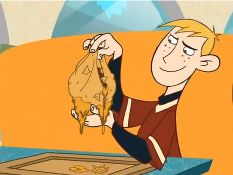

Naco

Description
A Naco is a combination of nachos and a taco served at Bueno Nacho. It's made by taking nacho cheese and tortilla chips, mixing it with the traditional fillings of a taco, placing it all within a tortilla shell, and then lifting up the sides to make a bag-like shape.
Ingredients
- Burrito-Size Flour Tortillas
- 1/4 Cup Butter, melted
- 1 lb. Ground Beef
- 1 Pkt. Taco Seasoning
- 1 Can Nacho Cheese
- Corn Tortilla Chips
- 1 Tomato, finely diced
- Green Leaf Lettuce
Steps
- In a large pan brown the meat and prepare it according to the taco seasoning packet instructions (seasoning powder + water). When you're cooking the meat make sure to break it up really well with a spatula.
- In 2 medium pots, warm up the refried beans & nacho cheese (1 pot for beans, 1 pot for cheese).
- Dice up the tomato & break several chips into smaller pieces.
- Preheat the oven to 350ºF.
- Lay a tortilla on a baking tray & lightly brush it with melted butter.
- Place a ramekin in the middle & then gather up the edges of the tortilla around it.
- Tie a bit of baking string around the top section of gathered tortilla to hold it in place, pulling it enough so that the tortilla isn't simply straight up & down but comes in a little bit at the top.
- Brush some butter in the folds of the tortilla & lift the whole thing up to brush butter underneath, on the tray.
- Slide it all into the oven & bake until the edges of the tortilla are golden brown & the tortilla is stiff, about 5-10 mins.
- Remove from the oven & untie the string. Carefully open the tortilla gathers just a little bit, enough to remove the ramekin.